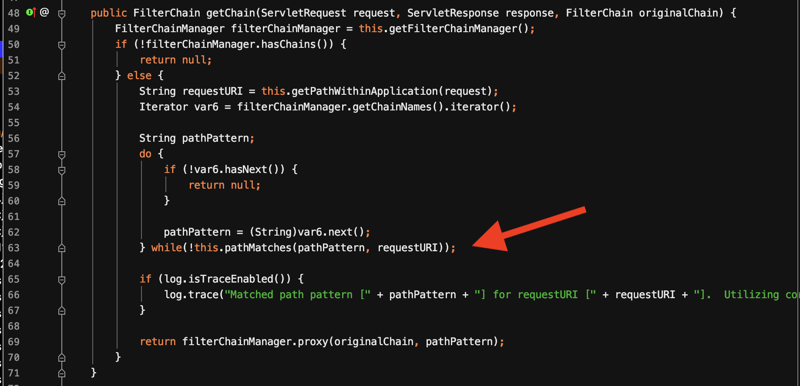
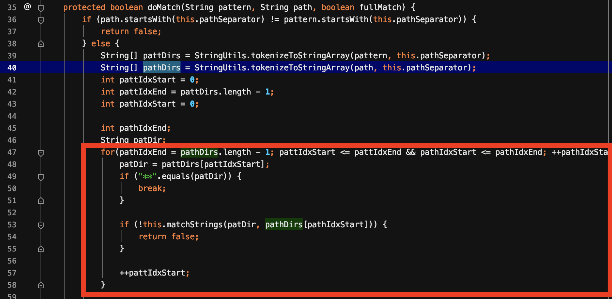
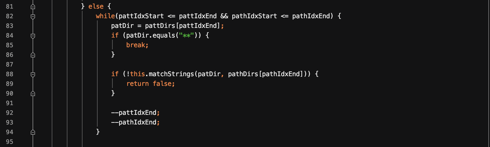
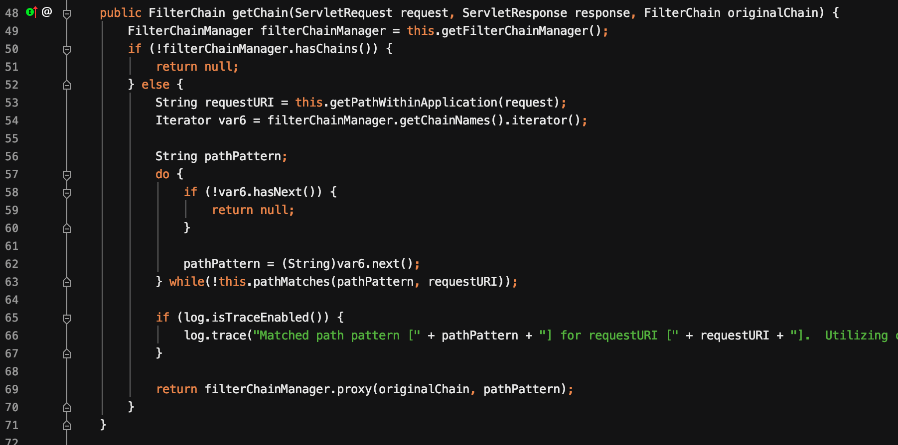
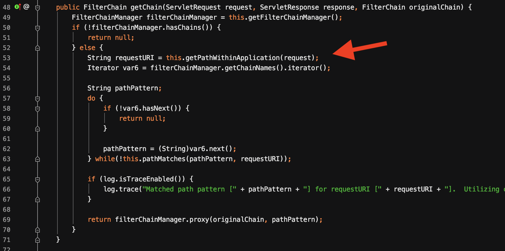
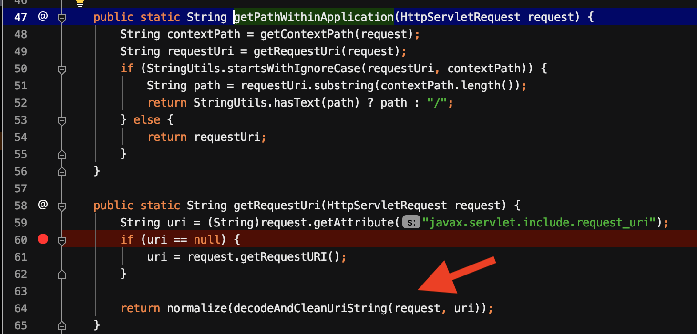
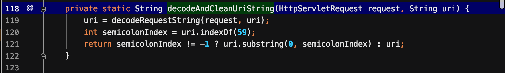
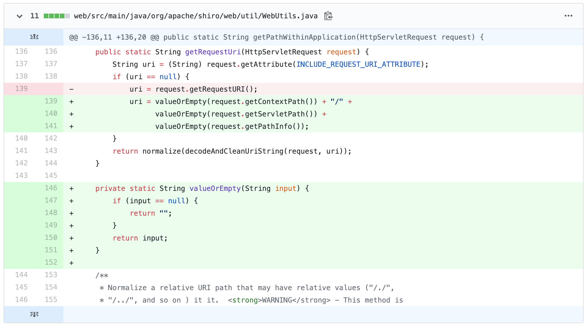

该漏洞源自于shiro-682问题。即在spring框架下uri = uri + ‘/‘绕过shiro防护的问题。在shiro1.5.0版本进行修复。然而修复后的仍然可被绕过。这篇文章深入分析了Shiro这一漏洞。
漏洞信息
影响版本
- shiro <= 1.5.1
这次从shiro-682开始介绍。
Shiro 682
影响版本
- shiro < 1.5.0
漏洞成因
在Spring web项目中，请求的URI如/resource/menus和/resource/menus/都可以访问到服务器的资源。但是Shiro中的URL路径表达式只能正确匹配到/resource/menus，而无法正确匹配到/resource/menus/，导致无法匹配进入到过滤链，从而绕过了Shiro的防护机制。
定位到PathMatchingFilterChainResolver#getChain函数。改函数作用即根据URL路径匹配中配置的URI路径表达式来匹配输入的URI，判断是否匹配拦截器，匹配成功将会返回响应的拦截器执行链，从而进入ShiroFilter执行。

跟进pathMatches函数，一直到AntPathMatcher#doMatch函数。


可以看到在这段逻辑中，当pattern为/hello/*，path为/hello/1/时，先从前往后进行匹配，到匹配*与1就结束了，然后接着往下走，从后往前匹配，这时候很显然匹配失败，因此不进入ShiroFilter链。
补丁

从该补丁可以看出，当请求的URI以/结尾时，先去掉/再进行匹配。
CVE-2020-1957
影响版本
- shiro <= 1.5.1
漏洞成因
前面在shiro 1.5.0版本中已经修复了在后面加上/的绕过方式。而此次的绕过方式还是在PathMatchingFilterChainResolver#getChain函数中。

跟进getPathWithinApplication函数中。

调用getRequestUri()函数，进而调用decodeAndcleanUriString对uri进行清理。跟进它

在这里它会判断URI中是否含有;，若含有则，截取;之前的值作为URL。因此，对于/xxx;/hello/1，Shiro截取的结果为/xxx，从而匹配不成功。但是在spring中却直接获取到了后面的URI，从而绕过鉴权。
补丁

在1.5.2版本中，将获取URI的方式从request.getRequestURI直接获取的方式改成获取request的ContextPath，ServletPath，PathInfo，然后再重新拼接而成。
对于/xxx;/hello/1，ContextPath，ServletPath，PathInfo分别为空，/hello/1，/1。拼接而成//hello/1/1。从而无法绕过了。
总结
此漏洞的成因主要是由于Shiro与Spring(Servlet)的拦截器对于URI模式匹配的差异，从而导致绕过。此外，还有undertow中的Filter与Controller对于URL解析不一致，从而可以通过/..;/绕过鉴权。